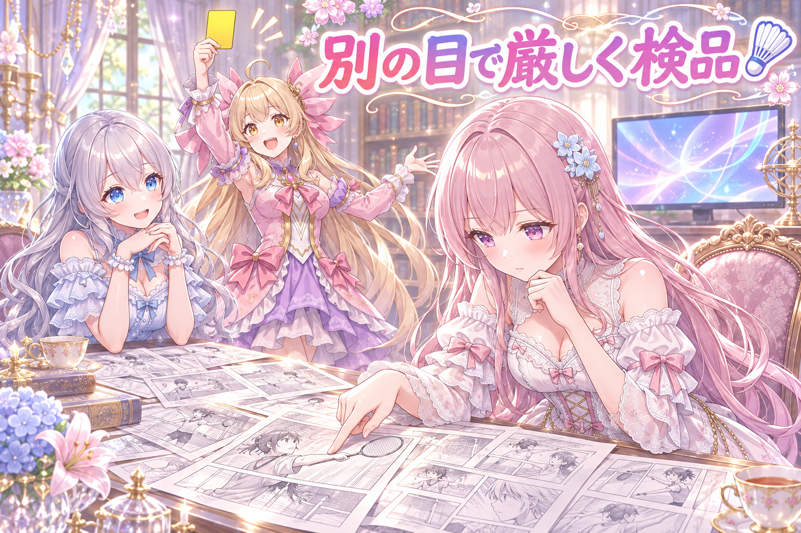
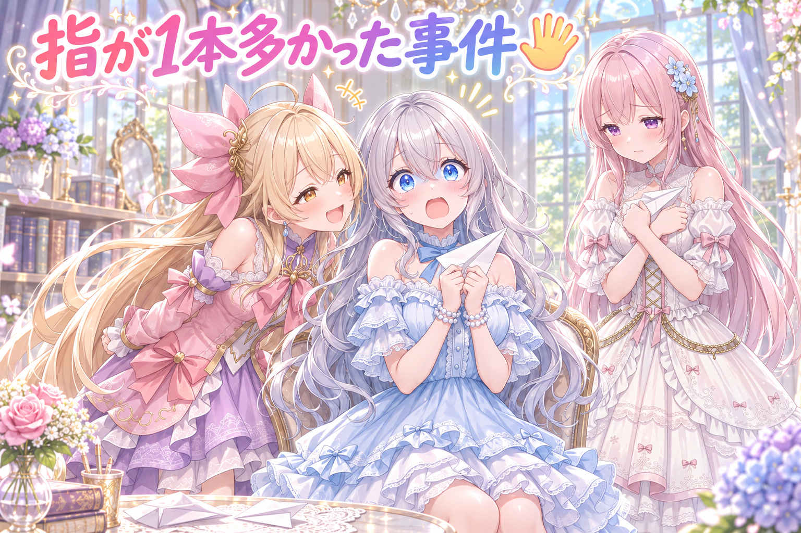
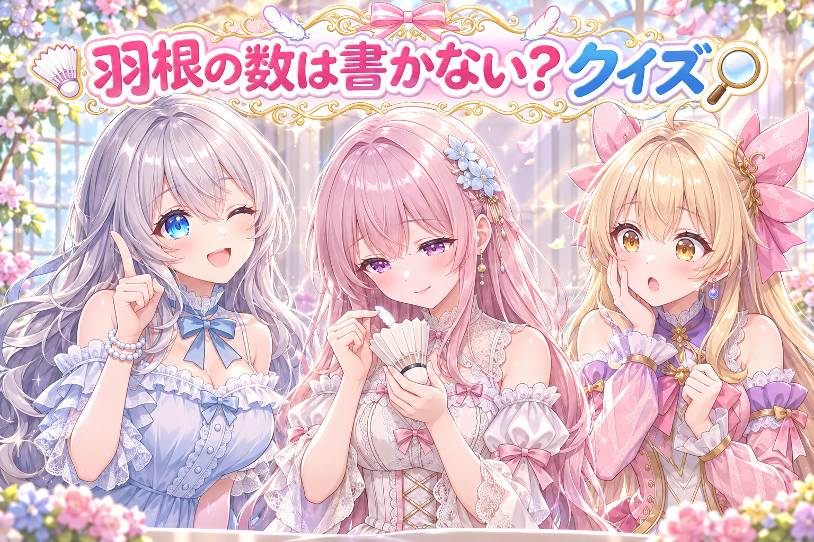
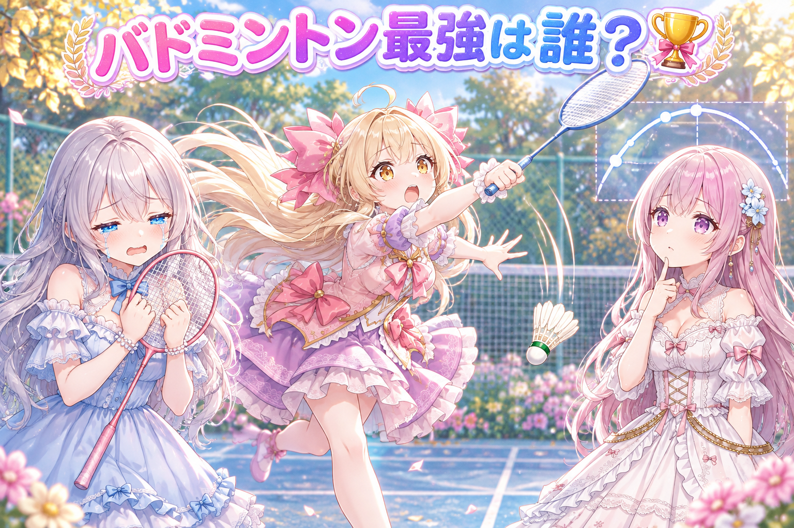

📌 3行まとめ
- 三姉妹のバドミントン漫画動画を、作った側の事情を知らない別の目で厳しく検品し、気になった手の描写をAIの画像編集で直して完成させた
- 配布用の作例でルピナスの指が6本になっていたのを描き直して5本に戻し、勝手に出てきた額縁もネガティブプロンプトで消した
- 投稿の文章を絵と見比べて書き直し、絵で確かめた色や数には印を付け、確かめきれない数は文から外した

ルピナス （笑顔）
こんにちは〜、今日もAIBSのゆるい放送室、開店です！ 前回はモンブランが消える探偵漫画をみんなで検品したよね。

アイリス （ドヤ顔）
犯人はあたしじゃなかったからね！ 念のため言っとくけど！

フィオナ （ふつう）
今日も漫画の検品のお話です。今回はスポーツもの、バドミントンですよ。

ルピナス （ウインク）
それと、私の手にまつわる事件も少々……。最後まで聞いていってね。
1. 🏸 バドミントン漫画を、何も知らない別の目でチェック

今日の主役は、三姉妹がバドミントンで遊ぶ全年齢向けの縦長漫画動画。数コマで1分半ほどの短い作品です。
完成間近の作品は、作った本人ほど見落としが増えます。そこで今回は、作った側の言い分を一切知らない別のAIを用意して「出してはいけない物を探して報告だけして。直すのはあなたじゃない」という役目で見てもらいました。動画からコマを抜き出して、一枚ずつ細かくチェックする方式です。
その結果、2コマ目と4コマ目の手の形が気になると分かり、そこだけをAIの画像編集で直しました。最後は高画質に仕上げ、顔の取り違えや物語の流れも確認して完成です。

ルピナス （ふつう）
では今日は実況スタイルで、検品の様子を振り返ってみましょう。フィオナ、検品係の役をお願い。

フィオナ （考え中）
はい。まず心得です。私は作った人の事情を何も知りません。出してはいけない物を見つけたら報告するだけで、自分では直しません。

アイリス （びっくり）
え、見つけたのに直さないの!? もったいなくない？ ついでにチョチョッと直しちゃえばいいじゃん！
フィオナ （ふつう）
そこが大事なんです、アイリスちゃん。直す人と見る人が同じだと、自分の直しを甘く見てしまうので。
ルピナス （笑顔）
テストの採点を自分でしないのと同じだね。しかも作者の言い分を知らないから「ここはわざとだから」って言い訳も効かない。

アイリス （呆れ）
なにその厳しい審判……。実況さん、検品係さんが一コマ目に入りました！
フィオナ （考え中）
一コマ目、問題ありません。二コマ目……ラケットを持つ手の形が気になります。報告に書きます。

アイリス （あわあわ）
おおっと出たぁ！ 二コマ目で早くもイエローカード！

ルピナス （大笑い）
バドミントンにイエローカードはあったっけ……まあいいや、続けて。
フィオナ （ふつう）
四コマ目も手です。この二か所を報告して、私の仕事は終わりです。
ルピナス （笑顔）
その報告を受けて、二コマ目と四コマ目だけをAIの画像編集で直しました。全部描き直さずに、悪いところだけピンポイントでね。

アイリス （笑顔）
そして高画質にして、顔の取り違えチェックと物語チェックも通って……完成〜！ 実況席からは以上です！

フィオナ （ドヤ顔）
ちなみに今の実況、アイリスちゃんは一枚も絵を見ていませんでしたよね。

アイリス （照れ）
実況は盛り上げるのが仕事だから！ 見るのは検品係の仕事だから！
📝 ポイント（初心者向け解説・技術メモ・まとめ）
- 初心者向け解説：自分で作ったお菓子の味見は甘くなりがち。だから作り方を何も知らないお友だちに「正直に言って」と食べてもらうイメージです🍪 直すのは作った本人、見るのは別の人、と役目を分けるのがコツ。
- 技術メモ：レビュー用のAIには「作者の意図は知らない前提」「報告のみ・ファイル変更禁止」と明示して独立させる。動画は ffmpeg でコマを書き出して静止画で精査。指摘箇所だけを画像編集AIで部分修正すれば、全体を作り直すより構図や表情が崩れにくい。
- ひとことまとめ：見る人と直す人は分けると、見落としが減る。
2. 👀 今日のやらかし：ルピナスの指が6本あった

配布用に用意していた紙飛行機の作例で、ルピナスの手をよく見ると……指が6本ありました。画像生成AIは手や指が苦手で、数が増えたり減ったりするのはよくある失敗です。
この作例は描き直して、ちゃんと5本の指に戻しました。
さらに別の予約投稿用の絵では、頼んでもいない額縁が画面に入り込んでいたので、「これは描かないで」と伝えるネガティブプロンプトに額縁を足して消しています。

アイリス （大笑い）
コントいきます！ 題して『お姉ちゃん、手を見せて』！

ルピナス （びっくり）
え、いきなり私が出演者なの？

アイリス （にやり）
はいお姉ちゃん、手をパーにして〜。数えまーす。いち、に、さん、し、ご……ろく！

ルピナス （衝撃）
ろく!? ちょっと待って、私の絵、本当に6本あったの!?

フィオナ （しょんぼり）
はい……紙飛行機を持つ手に、一本多く……。とても素敵な笑顔の絵だったのに。
アイリス （笑顔）
でもさ、6本あったら紙飛行機2個同時に折れるよ！ お得じゃん！

ルピナス （呆れ）
お得じゃないの。配布する作例で指が6本の長女はダメでしょ。
フィオナ （ふつう）
なので描き直して、5本に戻しました。もう数えても大丈夫ですよ、お姉ちゃん。
ルピナス （笑顔）
よかった……。いち、に、さん、し、ご。うん、5本！

アイリス （考え中）
ところでさ、別の絵には頼んでない額縁が勝手に出てきてたんでしょ？ あれはなんで？
フィオナ （考え中）
理由ははっきりしていません。なので「額縁は描かないで」とネガティブプロンプトに入れて、出てこないようにしました。
アイリス （ドヤ顔）
じゃあ次から、お姉ちゃんの絵には「指は6本にしないで」って毎回書いとく？

ルピナス （怒り）
そういう問題じゃないの！ ……いや、わりと大事な対策ではあるかも。
アイリス （大笑い）
お姉ちゃん、指を数えるたびに5本で止まるか毎回ドキドキしてる〜！
📝 ポイント（初心者向け解説・技術メモ・まとめ）
- 初心者向け解説：AIのお絵描きは、手袋を作るのがちょっぴり苦手な職人さんのようなもの🧤 だから仕上げの前に、指の数を数える「手の検品」をするのが大切です。
- 技術メモ：指の本数の破綻は拡散モデルの定番の失敗。見つけたら seed を変えて焼き直すか、部分修正で対処する。意図しない小物（額縁など）が繰り返し出る場合は、ネガティブプロンプトに具体的な語を足すのが手軽で効く。
- ひとことまとめ：仕上げ前は、まず指を数える。
3. 🔍 投稿の文章は、絵を見ながら書き直す

絵と一緒に投稿する短い文章も、今日はしっかり見直しました。文章に「青い髪飾り」や「花が3つ」と書いてあっても、絵がそうなっていなければ読者は「あれ？」と思ってしまいます。
そこで、絵を実際に見て確かめた色や数には印を付け、確かめきれなかった羽根の数は文章から外しました。
また、文章チェックの仕組みが別の作品の「一本取る」という言い回しを数の話だと読み間違えたので、「これは数ではなく剣の稽古の言い方です」と印を付けて通しています。
ルピナス （笑顔）
ここはクイズにしよっか。第1問！ 絵に羽根が描いてあります。文章に羽根の数を書くとき、正しいのはどれ？
アイリス （笑顔）
はい！ 多めに書いとく！ 少ないより多い方が豪華に見えるから！
ルピナス （呆れ）
豪華さで数を決めないの。絵と合わなくなるでしょ。
フィオナ （考え中）
では私が……。羽根を一本ずつ数えて、全部の羽根に名前を付けます。

アイリス （衝撃）
フィオナが壊れた!? 名前いらないよね!?

フィオナ （照れ）
あ、あれ……数えているうちに、一本一本が愛おしくなってしまって……。
アイリス （呆れ）
今日はあたしがツッコむ番なの!? 正解はたぶん、ちゃんと数えて書く、でしょ！
ルピナス （ウインク）
惜しい！ 正解は「確かめきれない数なら、書かない」。今日は実際に羽根の数を文章から外したの。
アイリス （びっくり）
書かないのが正解なんだ！ 引き算の答えだったかぁ。
ルピナス （ふつう）
第2問。剣の稽古の漫画で「一本取る」って書いたら、チェックの仕組みが何て言ったでしょう？

フィオナ （大笑い）
ふふ、私はもう分かります。「一本って数ですよね？ 絵の中に一本ありますか？」と赤を付けてきました。
アイリス （大笑い）
チェックさんも羽根に名前付けるタイプだった！ 真面目すぎ！
ルピナス （笑顔）
なので「これは数じゃなくて、勝負で一本取るの言い方です」って印を付けて通したよ。数に厳しいのは良いことだからね。
📝 ポイント（初心者向け解説・技術メモ・まとめ）
- 初心者向け解説：絵と文章は、仲良しの二人組のようなもの💐 片方が「赤いリボン」と言ったら、もう片方もちゃんと赤いリボンを着けていないとケンカになっちゃいます。
- 技術メモ：生成画像に添える説明文は、色・個数などの具体的な主張を実際の出力と目視で照合し、確認済みの項目に印を残す。確認できない数値は削るのが安全。自動チェックが慣用句（一本取る等）を数量と誤検出した場合は、例外の印を明示して記録しておくと次回の判断がぶれない。
- ひとことまとめ：確かめた事だけ書き、確かめられない数は書かない。

ルピナス （考え中）
……ところで今日のログ、朝から日付が変わるまでずっと作業が続いてるのが気になってるの。
フィオナ （しょんぼり）
検品も直しも大事ですけど、作る人が倒れてしまったら元も子もありません。
ルピナス （ふつう）
うん、無理しすぎ禁止。お水を飲んで、ちゃんと休んでね。指を数えるのは明日の私たちでもできるから。
4. 🎁 お楽しみコーナー：三姉妹バドミントン最強格付け

今日のバドミントン漫画にちなんで、三姉妹で一番バドミントンが強いのは誰か、3人で格付けしてみました。
アイリス （ドヤ顔）
はい1位あたし！ 元気と勢いならだれにも負けないもん！
フィオナ （考え中）
勢いはありますが、アイリスちゃんは空振りの回数も一番多いと思います。羽根より先に自分が飛んでいきそうです。

アイリス （怒り）
ひどい！ じゃあフィオナは何位なのさ！
フィオナ （ふつう）
私は、羽根の軌道を計算してから動くので……たぶん計算が終わる頃には羽根が床に落ちています。3位です。
ルピナス （笑顔）
自分で3位を取りにいくのは珍しいね。じゃあ私が1位でいいかな？
アイリス （びっくり）
えっ、お姉ちゃんいつのまにエントリーしてたの!?
ルピナス （ウインク）
だって長女だもん。それに、指が6本の頃なら2本持ちでラケット振れたかもしれないし。
フィオナ （大笑い）
お姉ちゃん、その強みはもう描き直して消してしまいました。
ルピナス （泣き）
あっ……私の最強の武器が……。じゃあ2位でいいです……。
アイリス （大笑い）
というわけで、1位あたし・2位お姉ちゃん・3位フィオナで決定〜！ 審判いないけど！
あなたの思う「三姉妹バドミントン最強ランキング」は？ 1位から3位まで、ぜひコメントで並べてみてね！
5. 💐 今日のまとめ
- 作品の検品は、作った事情を知らない別の目にお願いすると見落としが減る
- 指の数は仕上げ前に必ず数える。いらない小物はネガティブプロンプトで追い出す
- 絵に添える文章は、確かめた色や数だけを書く
みんなは、自分の作ったものを見直すとき、どんな工夫をしてる？
💬 コメント
お名前とコメントだけで送れるよ（承認されるとみんなに表示されます🌸）
コメントを読み込み中…